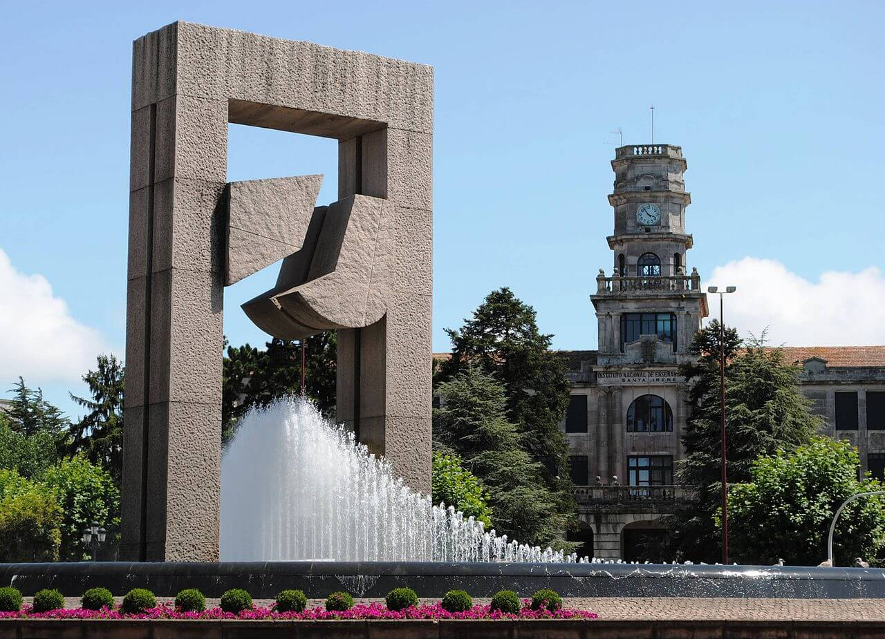
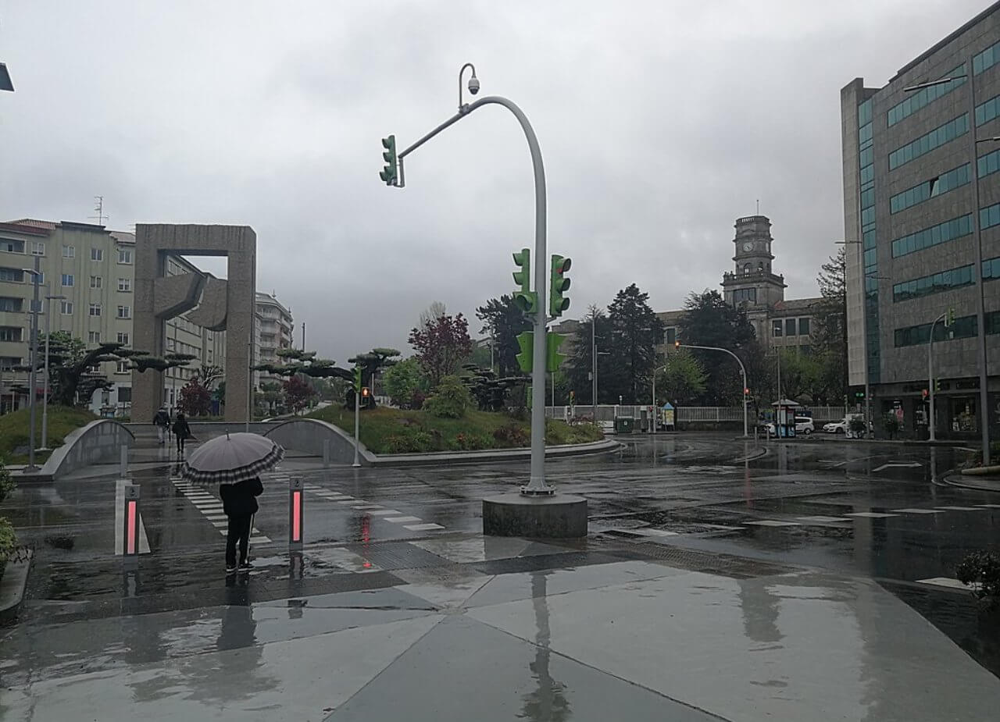

La Puerta del Atlántico


La Puerta del Atlántico, Silverio Rivas (1990), es uno de los monumentos más conocidos de Vigo. El impresionante conjunto arquitectónico es un homenaje a los emigrantes gallegos que zarparon desde el Puerto de Vigo hacia América.
La obra del escultor gallego Silverio Rivas está compuesta por tres elementos que proceden del mismo bloque de granito: "La Puerta" es la parte principal y la más reconocible, se trata de una escultura de 14 metros de altura y 427 toneladas que se apoya en un estanque. Las otras dos piezas, se encuentrarn al principio de la Gran Vía y de la Avenida de Castelao.